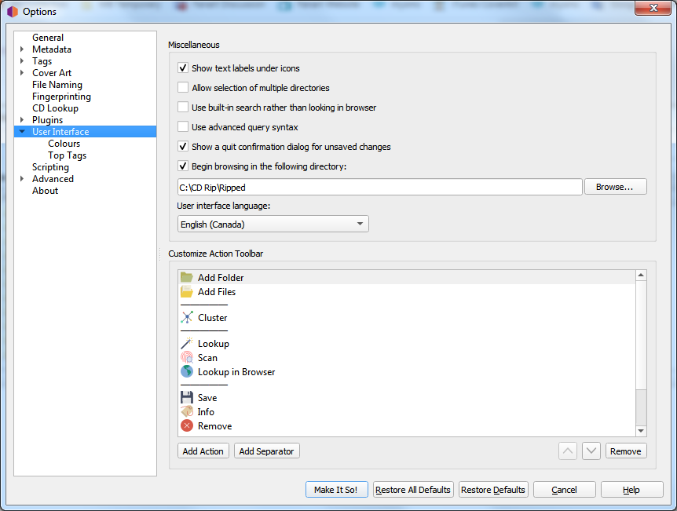

Options d’interface utilisateur¶
{kind=link}
Afficher les étiquettes de texte sous l’icône
Si cette option est désactivée, les étiquettes de texte sous les icônes de la barre d’outils ne seront pas affichées, ce qui fait que la barre d’outils apparaîtra un peu plus petite.
Autoriser la sélection de plusieurs répertoires
L’activation de cette option contournera le sélecteur de répertoire natif et utilisera la boîte de dialogue de fichier de QT. Cela peut être souhaitable car le sélecteur de répertoire natif ne vous permet généralement pas de sélectionner plus d’un répertoire. Ceci s’applique à la boîte de dialogue . Le navigateur de fichiers permet toujours la sélection de plusieurs répertoires.
Utilisez la syntaxe de requête avancée
Cela activera l’analyse de la syntaxe de requête avancée sur vos recherches. Cela s’applique uniquement à la zone de recherche en haut à droite de Picard, pas aux boutons de recherche.
Afficher une boîte de dialogue de confirmation de fermeture pour les modifications non enregistrées
Lorsque cela est activé, Picard affichera une boîte de dialogue lorsque vous essayez de quitter le programme avec des fichiers non enregistrés chargés. Cela peut aider à éviter de perdre accidentellement les modifications de balises que vous avez apportées, mais pas encore enregistrées.
Commencez à naviguer dans le répertoire suivant
Par défaut, Picard se souvient du dernier répertoire utilisé pour charger les fichiers. Si vous activez cette option et fournissez un répertoire, Picard démarrera toujours dans le répertoire fourni.
Langue de l’interface utilisateur
Par défaut, Picard s’affichera dans la langue affichée par votre système d’exploitation, mais vous pouvez le remplacer et sélectionner une autre langue si nécessaire.
Personnaliser la barre d’outils d’action
Cela vous permet d’ajouter, de supprimer ou de réorganiser les éléments affichés dans la barre d’outils Action.